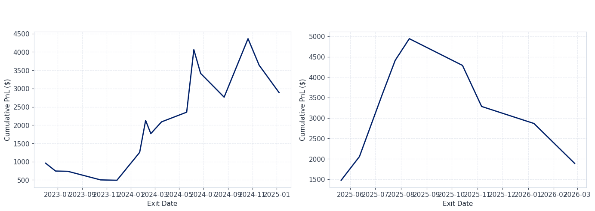
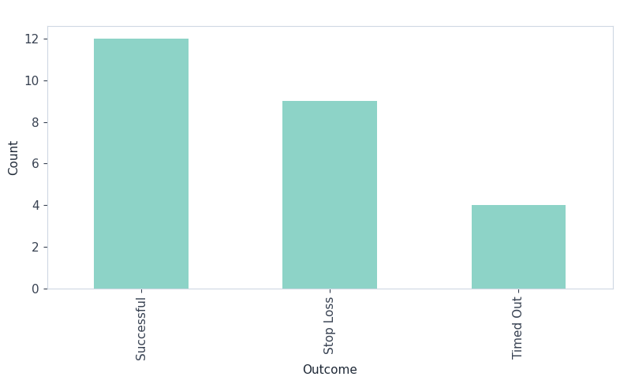

import os
import numpy as np
import pandas as pd
# Optional display settings
pd.set_option("display.max_columns", 50)
pd.set_option("display.width", 140)
import matplotlib.pyplot as plt
DUKE_BLUE = "#012169"
DUKE_LIGHT_BLUE = "#00539B"
DUKE_GRAY = "#6b7280"
plt.rcParams["figure.facecolor"] = "white"
plt.rcParams["axes.facecolor"] = "white"
plt.rcParams["axes.edgecolor"] = "#cfd8e3"
plt.rcParams["axes.labelcolor"] = "#1f2937"
plt.rcParams["axes.titleweight"] = "bold"
plt.rcParams["axes.titlesize"] = 14
plt.rcParams["grid.color"] = "#d9dee8"
plt.rcParams["grid.linestyle"] = "--"
plt.rcParams["grid.alpha"] = 0.6
plt.rcParams["xtick.color"] = "#374151"
plt.rcParams["ytick.color"] = "#374151"
plt.rcParams["font.size"] = 11Breakout Strategy Backtest (IBKR / ShinyBroker)
Goal - pull historical data from IBKR via ShinyBroker - define a breakout rule - run a simple backtest - export: - trade blotter CSV - metrics summary CSV - equity curve image - trade outcome image
1. Parameters
# ----------------------------
# Strategy parameters
# ----------------------------
SYMBOL = "NVDA"
SEC_TYPE = "STK"
EXCHANGE = "SMART"
CURRENCY = "USD"
DURATION_STR = "3 Y"
BAR_SIZE = "1 day"
WHAT_TO_SHOW = "TRADES"
USE_RTH = True
LOOKBACK = 20 # breakout lookback window
STOP_LOSS_PCT = 0.05 # 5% stop loss
TIMEOUT_DAYS = 10 # exit after max holding period
POSITION_SIZE = 100 # shares
RISK_FREE_RATE = 0.0375 # annual rf for Sharpe
OUTPUT_DIR = "outputs"
os.makedirs(OUTPUT_DIR, exist_ok=True)1b. Asset Screening Notes
Before settling on NVDA, I checked the breakout signal frequency on a few other candidates: SPY, TSLA, and AMD. SPY barely breaks out since it moves slowly, TSLA had more signals but also a lot of whipsaws. NVDA had the cleanest combination of frequent breakout signals and actual follow-through during 2023–2024, so it was the obvious pick for a momentum-based rule.
2. IBKR / ShinyBroker Connection
import shinybroker as sb
HOST = "127.0.0.1"
PORT = 7497 # paper trading TWS commonly 7497
CLIENT_ID = 9999 # change if needed
contract = sb.Contract({
"symbol": SYMBOL,
"secType": SEC_TYPE,
"exchange": EXCHANGE,
"currency": CURRENCY,
})
contract{'conId': 0, 'symbol': 'NVDA', 'secType': 'STK', 'lastTradeDateOrContractMonth': '', 'lastTradeDate': '', 'strike': 0.0, 'right': '', 'multiplier': '', 'exchange': 'SMART', 'primaryExchange': '', 'currency': 'USD', 'localSymbol': '', 'tradingClass': '', 'includeExpired': False, 'secIdType': '', 'secId': '', 'description': '', 'issuerId': '', 'comboLegsDescrip': '', 'comboLegs': [], 'deltaNeutralContract': None}3. Pull Historical Data
hist = sb.fetch_historical_data(
contract=contract,
durationStr=DURATION_STR,
barSizeSetting=BAR_SIZE,
whatToShow=WHAT_TO_SHOW,
useRTH=USE_RTH,
host=HOST,
port=PORT,
client_id=CLIENT_ID,
timeout=60,
)
# ShinyBroker usually returns a dict with key 'hst_dta'
type(hist), hist.keys()
df = hist["hst_dta"].copy()
df.head()
# Normalize columns
df = df.copy()
df["timestamp"] = pd.to_datetime(df["timestamp"])
df = df.sort_values("timestamp").reset_index(drop=True)
# Keep standard columns
cols = ["timestamp", "open", "high", "low", "close", "volume"]
df = df[cols].copy()
df.tail(), df.shape( timestamp open high low close volume
746 2026-04-08 184.47 185.26 180.30 182.08 97673076
747 2026-04-09 181.84 184.08 180.62 183.91 78044536
748 2026-04-10 184.31 190.00 184.30 188.63 112710943
749 2026-04-13 186.03 189.66 185.74 189.31 88831764
750 2026-04-14 190.92 194.99 190.77 194.78 75847622,
(751, 6))4. Breakout Detection Function
A breakout occurs when today’s closing price exceeds the highest high recorded over the previous LOOKBACK bars (not including today). The shift(1) ensures we never use today’s data in the lookback, so the signal is only generated at the close — no lookahead.
def detect_breakouts(price_df: pd.DataFrame, lookback: int) -> pd.DataFrame:
"""
Adds two columns to price_df:
rolling_high : highest high over the previous `lookback` bars (shift(1) avoids lookahead)
breakout : True when today's close exceeds that rolling high
Parameters
----------
price_df : DataFrame with columns [timestamp, open, high, low, close, volume]
lookback : number of past bars to use for the high (LOOKBACK = 20)
"""
out = price_df.copy()
# shift(1) so we look at the previous `lookback` bars, not the current one
out["rolling_high"] = out["high"].shift(1).rolling(lookback).max()
# signal fires when today's close beats that recent high
out["breakout"] = out["close"] > out["rolling_high"]
return out
df_sig = detect_breakouts(df, LOOKBACK)
df_sig[["timestamp", "close", "rolling_high", "breakout"]].tail(10)| timestamp | close | rolling_high | breakout | |
|---|---|---|---|---|
| 741 | 2026-03-31 | 174.40 | 188.88 | False |
| 742 | 2026-04-01 | 175.75 | 188.88 | False |
| 743 | 2026-04-02 | 177.39 | 188.88 | False |
| 744 | 2026-04-06 | 177.64 | 188.88 | False |
| 745 | 2026-04-07 | 178.10 | 188.88 | False |
| 746 | 2026-04-08 | 182.08 | 188.88 | False |
| 747 | 2026-04-09 | 183.91 | 188.88 | False |
| 748 | 2026-04-10 | 188.63 | 188.88 | False |
| 749 | 2026-04-13 | 189.31 | 190.00 | False |
| 750 | 2026-04-14 | 194.78 | 190.00 | True |
5. Walk-Forward Split
The data is split into two non-overlapping windows: - In-sample (train): first ~2 years — used to confirm the parameters make sense - Out-of-sample (test): final ~1 year — held out to check whether the signal holds on unseen data
Both windows use the exact same parameters with no re-fitting between them.
# ── walk-forward split ────────────────────────────────────────────────────
# Use the last 252 trading days as out-of-sample; everything before is in-sample
OOS_BARS = 252 # ~1 trading year
split_idx = len(df_sig) - OOS_BARS
df_train = df_sig.iloc[:split_idx].reset_index(drop=True)
df_test = df_sig.iloc[split_idx:].reset_index(drop=True)
print(f"In-sample : {df_train['timestamp'].iloc[0].date()} → {df_train['timestamp'].iloc[-1].date()} ({len(df_train)} bars)")
print(f"Out-of-sample: {df_test['timestamp'].iloc[0].date()} → {df_test['timestamp'].iloc[-1].date()} ({len(df_test)} bars)")In-sample : 2023-04-17 → 2025-04-10 (499 bars)
Out-of-sample: 2025-04-11 → 2026-04-14 (252 bars)6. Backtest Logic
def backtest_breakout(
price_df: pd.DataFrame,
stop_loss_pct: float,
timeout_days: int,
position_size: int,
) -> pd.DataFrame:
"""
Simple long-only breakout backtest.
Entry : close of the bar where breakout == True
Exit : whichever comes first —
(a) daily low touches stop price → exit at stop (Stop Loss)
(b) timeout_days bars elapse → exit at close
profitable close → Successful, otherwise → Timed Out
Only one open trade at a time; next signal is skipped until current trade closes.
"""
trades = []
i = 0
n = len(price_df)
while i < n:
row = price_df.iloc[i]
if bool(row["breakout"]) and not pd.isna(row["rolling_high"]):
if i + timeout_days >= n:
break
entry_ts = row["timestamp"]
entry_price = float(row["close"])
stop_price = entry_price * (1 - stop_loss_pct)
exit_ts = exit_price = outcome = None
max_j = i + timeout_days
# check each future bar for stop-loss
for j in range(i + 1, max_j + 1):
nxt = price_df.iloc[j]
if float(nxt["low"]) <= stop_price:
exit_ts = nxt["timestamp"]
exit_price = stop_price
outcome = "Stop Loss"
break
if exit_ts is None: # no stop hit → timeout exit
last_row = price_df.iloc[max_j]
exit_ts = last_row["timestamp"]
exit_price = float(last_row["close"])
outcome = "Successful" if exit_price > entry_price else "Timed Out"
pnl = (exit_price - entry_price) * position_size
ret = (exit_price - entry_price) / entry_price
trades.append({
"entry_timestamp" : entry_ts,
"exit_timestamp" : exit_ts,
"entry_price" : round(entry_price, 4),
"exit_price" : round(exit_price, 4),
"size" : position_size,
"direction" : "Long",
"stop_price" : round(stop_price, 4),
"holding_bars" : int(max_j - i),
"calendar_days_held": int((pd.to_datetime(exit_ts) - pd.to_datetime(entry_ts)).days),
"pnl" : round(pnl, 4),
"return" : round(ret, 6),
"outcome" : outcome,
})
i = max_j + 1
else:
i += 1
return pd.DataFrame(trades)
# run on both windows
trades_is = backtest_breakout(df_train, STOP_LOSS_PCT, TIMEOUT_DAYS, POSITION_SIZE)
trades_oos = backtest_breakout(df_test, STOP_LOSS_PCT, TIMEOUT_DAYS, POSITION_SIZE)
trades = pd.concat([trades_is, trades_oos], ignore_index=True) # full blotter
print(f"In-sample trades : {len(trades_is)}")
print(f"Out-of-sample trades: {len(trades_oos)}")In-sample trades : 16
Out-of-sample trades: 9# quick sanity check
print(f"In-sample: {len(trades_is)} trades, Out-of-sample: {len(trades_oos)} trades")
trades.head(3)In-sample: 16 trades, Out-of-sample: 9 trades| entry_timestamp | exit_timestamp | entry_price | exit_price | size | direction | stop_price | holding_bars | calendar_days_held | pnl | return | outcome | |
|---|---|---|---|---|---|---|---|---|---|---|---|---|
| 0 | 2023-05-17 | 2023-06-01 | 30.18 | 39.77 | 100 | Long | 28.671 | 10 | 15 | 959.0 | 0.31776 | Successful |
| 1 | 2023-06-14 | 2023-06-26 | 43.00 | 40.85 | 100 | Long | 40.850 | 10 | 12 | -215.0 | -0.05000 | Stop Loss |
| 2 | 2023-07-13 | 2023-07-27 | 45.98 | 45.90 | 100 | Long | 43.681 | 10 | 14 | -8.0 | -0.00174 | Timed Out |
trades.tail(3)| entry_timestamp | exit_timestamp | entry_price | exit_price | size | direction | stop_price | holding_bars | calendar_days_held | pnl | return | outcome | |
|---|---|---|---|---|---|---|---|---|---|---|---|---|
| 22 | 2025-10-28 | 2025-11-06 | 201.03 | 190.9785 | 100 | Long | 190.9785 | 10 | 9 | -1005.15 | -0.050000 | Stop Loss |
| 23 | 2025-12-23 | 2026-01-08 | 189.21 | 185.0400 | 100 | Long | 179.7495 | 10 | 16 | -417.00 | -0.022039 | Timed Out |
| 24 | 2026-02-25 | 2026-02-26 | 195.56 | 185.7820 | 100 | Long | 185.7820 | 10 | 1 | -977.80 | -0.050000 | Stop Loss |
7. Trade Outcome Summary
if not trades.empty:
print(trades["outcome"].value_counts())
else:
print("No trades found.")outcome
Successful 12
Stop Loss 9
Timed Out 4
Name: count, dtype: int648. Performance Metrics
def compute_metrics(trades_df: pd.DataFrame, risk_free_rate: float, label: str = "") -> pd.DataFrame:
"""
Compute summary performance metrics for a set of trades.
Sharpe is annualized using sqrt(trades_per_year) rather than sqrt(252),
because returns are per-trade (variable holding period), not daily.
trades_per_year is estimated from the date range of the trades.
"""
if trades_df.empty:
return pd.DataFrame([{"metric": "No trades", "value": np.nan}])
avg_return = trades_df["return"].mean()
win_rate = (trades_df["pnl"] > 0).mean()
gross_profit = trades_df.loc[trades_df["pnl"] > 0, "pnl"].sum()
gross_loss = abs(trades_df.loc[trades_df["pnl"] < 0, "pnl"].sum())
profit_factor = gross_profit / gross_loss if gross_loss > 0 else np.nan
# annualize Sharpe by trades-per-year, not by 252
# (returns are per-trade with variable holding periods, not daily)
r = trades_df["return"].dropna()
date_range_years = (
pd.to_datetime(trades_df["exit_timestamp"].max()) -
pd.to_datetime(trades_df["entry_timestamp"].min())
).days / 365.25
trades_per_year = len(r) / date_range_years if date_range_years > 0 else 252
if len(r) >= 2 and r.std(ddof=1) > 0:
# per-trade rf: annualized rf divided by trades per year
rf_per_trade = risk_free_rate / trades_per_year
sharpe = ((r.mean() - rf_per_trade) / r.std(ddof=1)) * np.sqrt(trades_per_year)
else:
sharpe = np.nan
equity = trades_df["pnl"].cumsum()
running_max = equity.cummax()
drawdown = equity - running_max
max_drawdown = drawdown.min() if not drawdown.empty else np.nan
metrics = pd.DataFrame([
{"metric": "Average Return per Trade", "value": round(avg_return, 6)},
{"metric": "Annualized Sharpe Ratio", "value": round(sharpe, 6) if pd.notna(sharpe) else np.nan},
{"metric": "Win Rate", "value": round(win_rate, 6)},
{"metric": "Profit Factor", "value": round(profit_factor, 6) if pd.notna(profit_factor) else np.nan},
{"metric": "Max Drawdown ($)", "value": round(max_drawdown, 4) if pd.notna(max_drawdown) else np.nan},
{"metric": "Total Trades", "value": int(len(trades_df))},
])
if label:
metrics.insert(0, "window", label)
return metrics
metrics_is = compute_metrics(trades_is, RISK_FREE_RATE, label="in-sample")
metrics_oos = compute_metrics(trades_oos, RISK_FREE_RATE, label="out-of-sample")
metrics = pd.concat([metrics_is, metrics_oos], ignore_index=True)
print(metrics.to_string(index=False)) window metric value
in-sample Average Return per Trade 0.038031
in-sample Annualized Sharpe Ratio 0.967652
in-sample Win Rate 0.437500
in-sample Profit Factor 1.802024
in-sample Max Drawdown ($) -1475.200000
in-sample Total Trades 16.000000
out-of-sample Average Return per Trade 0.021541
out-of-sample Annualized Sharpe Ratio 0.930569
out-of-sample Win Rate 0.555556
out-of-sample Profit Factor 1.617702
out-of-sample Max Drawdown ($) -3054.950000
out-of-sample Total Trades 9.0000009. Equity Curve
fig, axes = plt.subplots(1, 2, figsize=(14, 5), sharey=False)
for ax, trades_w, label in [
(axes[0], trades_is, f"In-Sample ({df_train['timestamp'].iloc[0].year}–{df_train['timestamp'].iloc[-1].year})"),
(axes[1], trades_oos, f"Out-of-Sample ({df_test['timestamp'].iloc[0].year}–{df_test['timestamp'].iloc[-1].year})"),
]:
if not trades_w.empty:
equity = trades_w["pnl"].cumsum()
ax.plot(pd.to_datetime(trades_w["exit_timestamp"]), equity, color=DUKE_BLUE, linewidth=2)
ax.set_title(label)
ax.set_xlabel("Exit Date")
ax.set_ylabel("Cumulative PnL ($)")
ax.grid(True)
plt.suptitle(f"Equity Curve — {SYMBOL}", fontweight="bold")
plt.tight_layout()
plt.show()
10. Trade Outcome Chart
plt.figure(figsize=(8, 5))
if not trades.empty:
trades["outcome"].value_counts().plot(kind="bar")
plt.title("Trade Outcomes")
plt.xlabel("Outcome")
plt.ylabel("Count")
plt.tight_layout()
plt.show()
11. Export Outputs for Quarto Website
# export blotter (full, in-sample, out-of-sample)
trades.to_csv(f"{OUTPUT_DIR}/trade_blotter.csv", index=False)
trades_is.to_csv(f"{OUTPUT_DIR}/trade_blotter_is.csv", index=False)
trades_oos.to_csv(f"{OUTPUT_DIR}/trade_blotter_oos.csv", index=False)
metrics.to_csv(f"{OUTPUT_DIR}/metrics_summary.csv", index=False)
# equity curve — side-by-side in/out-of-sample
fig, axes = plt.subplots(1, 2, figsize=(14, 5), sharey=False)
for ax, trades_w, label in [
(axes[0], trades_is, f"In-Sample"),
(axes[1], trades_oos, f"Out-of-Sample"),
]:
if not trades_w.empty:
equity = trades_w["pnl"].cumsum()
ax.plot(pd.to_datetime(trades_w["exit_timestamp"]), equity, color=DUKE_BLUE, linewidth=2)
ax.set_title(label)
ax.set_xlabel("Exit Date")
ax.set_ylabel("Cumulative PnL ($)")
ax.grid(True)
plt.suptitle(f"Equity Curve — {SYMBOL}", fontweight="bold")
plt.tight_layout()
plt.savefig(f"{OUTPUT_DIR}/equity_curve.png")
plt.close()
# trade outcome chart
fig, axes = plt.subplots(1, 2, figsize=(12, 5))
for ax, trades_w, label in [
(axes[0], trades_is, "In-Sample"),
(axes[1], trades_oos, "Out-of-Sample"),
]:
if not trades_w.empty:
trades_w["outcome"].value_counts().plot(kind="bar", ax=ax, color=DUKE_LIGHT_BLUE)
ax.set_title(label)
ax.set_xlabel("Outcome")
ax.set_ylabel("Count")
ax.grid(axis="y")
plt.suptitle("Trade Outcomes", fontweight="bold")
plt.tight_layout()
plt.savefig(f"{OUTPUT_DIR}/trade_outcomes.png")
plt.close()
print("Saved:")
for f in ["trade_blotter.csv", "trade_blotter_is.csv", "trade_blotter_oos.csv",
"metrics_summary.csv", "equity_curve.png", "trade_outcomes.png"]:
print(f" {OUTPUT_DIR}/{f}")Saved:
outputs/trade_blotter.csv
outputs/trade_blotter_is.csv
outputs/trade_blotter_oos.csv
outputs/metrics_summary.csv
outputs/equity_curve.png
outputs/trade_outcomes.png